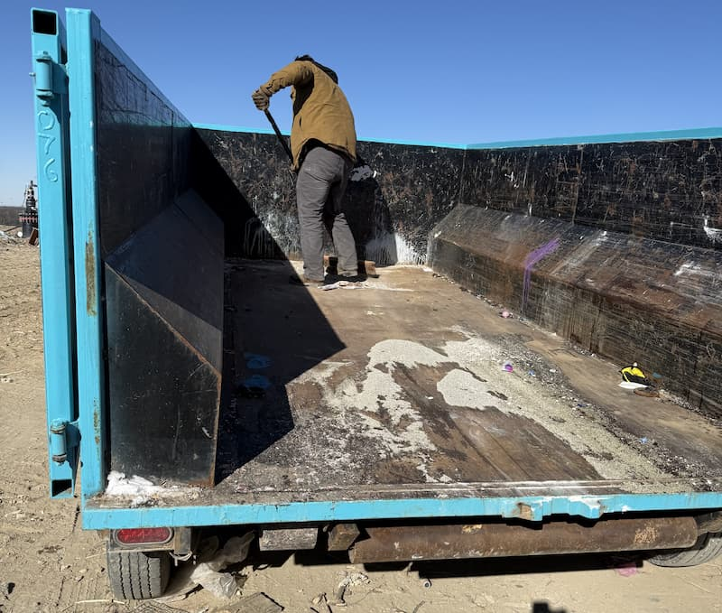

Property Management: Handling Tenant Cleanouts
Tenant turnover is one of the most time-sensitive situations a landlord or property manager faces. The unit needs to be empty, clean, and ready for the next tenant as fast as possible. Here's how to make dumpster rental a seamless part of that process—whether you manage one rental or a portfolio of thirty.

A property manager in Worthington called me on a Tuesday morning. She manages about fifteen single-family rentals across the Columbus area and had a tenant move out over the weekend—leaving behind a living room's worth of furniture, a garage packed with junk, and a refrigerator full of food.
"I've got a new tenant moving in Saturday," she said. "I need this stuff gone."
It was Tuesday. She had four days.
I had a 14-yard dumpster at the property by noon. Her maintenance crew loaded it over the next two days, I picked it up Thursday, and the unit was clean and ready with a full day to spare.
That's what this should look like. Fast, predictable, no drama. But for landlords and property managers who haven't built waste removal into their turnover process, tenant cleanouts have a way of becoming a scramble every single time.
Here's how to stop scrambling.
What a Tenant Cleanout Actually Involves
Every cleanout is different, but the range is fairly predictable. On the light end, a tenant leaves the unit mostly clear with a few items they couldn't be bothered to haul away—a broken chair, a box of kitchen stuff, some trash bags in the corner. On the heavy end, a long-term tenant vacates and the unit looks like a storage facility exploded: furniture in every room, clothes still in the closets, appliances they didn't take, debris in the yard, and a garage that hasn't been touched in years.
The difference between those two situations is the difference between needing a quick junk removal pickup and needing a full 20-yard dumpster. Getting that assessment right before you order saves you money and keeps your turnover timeline clean.
When a tenant moves out, walk the unit before you do anything else. Open every closet, check the basement, look in the garage, walk the yard. Get a clear picture of the volume. That five-minute walkthrough tells you exactly what size you need—and it takes one phone call to confirm.
Sizing the Dumpster Right
For the vast majority of tenant cleanouts, a 14-yard dumpster is the right call. It holds the equivalent of about five pickup truck loads—enough for furniture from one or two rooms, a few appliances, yard debris, and the miscellaneous junk that accumulates in closets and garages over a tenancy.
The 14-yard handles most situations. But there are two scenarios where I'd recommend stepping up to a 20-yard:
Long-Term Tenants
The longer someone lives somewhere, the more stuff they tend to leave behind. A tenant who's been in a house for five or eight years treats the basement, garage, and yard as semi-permanent storage. When they leave—especially if it's not under the best circumstances—they often walk out and leave it all. If you're cleaning out a unit after a multi-year tenancy and there's a basement or attached garage involved, start with a 20-yard.
Heavily Loaded Units
Some tenants accumulate. It has nothing to do with how long they lived there—it's just the volume they packed into the space. If your walkthrough reveals furniture stacked in multiple rooms, a full garage, and significant outdoor debris, a 20-yard gives you room to work without having to call for a second dumpster mid-cleanout.
The 20-yard costs more upfront, but one rental at the right size is always cheaper than one at the wrong size plus an emergency second drop when you're already two days into the job.
Cleanout Sizing at a Glance
14-yard: Standard cleanout — furniture from 1–2 rooms, a few appliances, garage items, general junk. Handles most tenant turnover situations.
20-yard: Long-term tenancy, heavily loaded unit, or basement + garage combination. When in doubt after your walkthrough, start here.
Not sure which size you need? Call me and describe what you're working with — I'll give you a straight answer in two minutes.
Multi-Unit Properties: Where to Put the Dumpster
Single-family rental cleanouts are straightforward—the dumpster goes in the driveway. Multi-unit properties take a bit more thought.
If you manage an apartment building or multi-unit complex, placement matters. You want the dumpster close enough to be useful without blocking other tenants' parking, access routes, or building entrances. Here's how I typically work through it with property managers:
Shared Parking Lots
For a parking lot placement, the perimeter beats the center every time. End-of-row spots or corner positions minimize disruption to other residents while still giving your crew reasonable access for loading. If the lot has designated visitor spots, those often work well—they're less likely to create conflicts with residents going about their day.
I use driveway protection boards on every delivery. On asphalt parking lots especially, those boards matter—they distribute the weight and prevent surface damage. If the property owner or building management has concerns about the lot surface, that's the first thing I address when I pull up.
Building Access Points
If your cleanout crew is hauling items from upper floors or through interior hallways, put the dumpster as close to the building entrance as possible without blocking it. Side entrances and service doors are usually the best option—far enough out of the way to keep the building functional, close enough that nobody's hauling a couch across a full parking lot.
HOA and Community Rules
Some communities have rules about dumpster placement—approved locations, time limits, or permit requirements. If your rental is in an HOA-managed community or a planned development, check those rules before booking. In most Columbus-area municipalities, a dumpster on private property doesn't require a permit. Street placement is a different situation—that typically involves a city permit. I can walk you through what applies to your specific address.
Timing Your Cleanout Around Turnover
The window between a tenant moving out and a new tenant moving in is almost always shorter than it looks on the calendar. Once you account for cleaning, touch-up repairs, and the move-in logistics themselves, a few weeks can shrink to a few days fast.
The cleanout should be the first thing that happens after move-out—not the last. Here's why: your cleaning crew can't properly clean a unit that still has furniture and junk in it. Your maintenance team can't assess what needs repair until the space is clear. Every day the unit sits full of someone else's belongings is a day your turnover clock isn't actually running.
The sequence that works:
- Move-out day (or the morning after): Dumpster delivered.
- Day 2–3: Your crew loads the dumpster.
- Day 3–4: Dumpster picked up. Unit is clear.
- Day 4 onward: Cleaning crew goes in. Maintenance assesses. Repairs start.
Running it in that order means nothing is waiting on anything else. The dumpster doesn't sit half-full for a week while you wait on a cleaning appointment. The cleaners don't arrive to a unit that still has a sectional couch in the living room. The process moves.
Emergency Turnarounds: When You Need It Fast
Not every vacancy comes with advance notice. Sometimes a situation escalates quickly and you need a unit cleared fast. When that happens, call me.
I offer same-day delivery throughout the Columbus area when you call before 2 PM. I can't guarantee same-day availability in every situation—demand and logistics vary by day—but if you're in a crunch, the earlier you call, the better the odds. Even when same-day isn't available, I can usually get a dumpster to you first thing the following morning.
The property manager in Worthington I mentioned at the start called at 9 AM. She had a dumpster by noon. That kind of turnaround matters when you have a move-in scheduled and a unit full of abandoned belongings standing between you and it.
If you know a vacancy is coming—even a few days out—call ahead and get it on the schedule. Early booking means I can lock in your delivery window and you don't have to hope for availability on short notice when your timeline is already tight.
Dumpster Rental vs. Junk Removal for Cleanouts
I get this question from property managers regularly, and the honest answer depends on your situation.
Choose dumpster rental when you have a maintenance crew, a handyman, or anyone on your team who can do the loading. You control the pace. The dumpster sits at the property for a few days, your crew loads on their schedule, and I pick it up when they're done. This is almost always the more cost-effective option when you have labor available—and most property managers do.
Choose junk removal when you don't have anyone to handle the loading, or the situation requires someone to show up and clear everything in a single visit. Junk removal is a done-in-one-day service—we come, we load, we haul, we're gone. It costs more per cubic yard, but it's zero effort on your end.
For property managers running regular turnover across multiple units, dumpster rental almost always makes more sense. You have maintenance teams or cleaning crew relationships who can handle the loading, and the cost savings across multiple cleanouts per year add up fast. If you're a solo landlord managing one property and you're not doing the loading yourself, junk removal might be worth the premium for the convenience.
I offer both. Call me and I'll give you a straight recommendation based on your situation.
Working Together Across a Portfolio
If you're managing a portfolio of rentals, you're not a one-time customer—and I don't work with you like one.
Repeat property managers get priority scheduling. When you call, you're not starting from scratch each time. You get fast turnarounds, flexible pickup windows, and a vendor who understands that your timelines are tight and your turnover windows don't move for anybody. I know how rental properties operate, and I know that a dumpster that shows up a day late or gets picked up on the wrong schedule costs you real money in carrying costs and delays.
I work with landlords and property managers across Dublin, Hilliard, Powell, Upper Arlington, Worthington, Plain City, and throughout the greater Columbus area. If you're managing rentals across multiple locations, one call handles it. I'll coordinate delivery and pickup across properties without you having to track down a different vendor for each area.
The pricing is the same flat rate for everyone: $319 + 8% Ohio tax = $344.52 per rental. What repeat customers get is something more valuable than a discount—reliability and access. A vendor relationship that works so consistently you stop having to think about it as a problem to solve on every turnover.
| Situation | Recommended Size | Service Type | When to Book |
|---|---|---|---|
| Standard unit cleanout (1–2 years tenancy) | 14-yard | Dumpster rental | Move-out day |
| Long-term tenant or heavy load | 20-yard | Dumpster rental | Move-out day or before |
| No loading crew available | N/A | Junk removal | As soon as unit is vacant |
| Emergency / fast turnaround needed | 14 or 20-yard | Same-day delivery | Call before 2 PM |
The Bottom Line for Landlords and Property Managers
The property manager in Worthington now calls me at the start of every turnover. She doesn't wait to see how much the tenant left behind and she doesn't scramble to find availability when her move-in is two days away. She books the dumpster on move-out day, her crew loads it while the unit is being prepped, and it's gone before the new tenant arrives. The whole thing takes about fifteen minutes of her time across the entire process.
That's what a solved problem looks like. Tenant cleanouts are one of the most predictable parts of managing rental property—they happen every single time someone moves out. Once you have a process and a vendor you can count on, it stops being a scramble and starts being a line item.
Call me, describe your property and what you're working with, and I'll tell you exactly what you need. Five minutes on the phone, same-day delivery when timing allows, and a dumpster that's gone before your next tenant shows up.
Property Manager Quick Reference
- 14-yard: Standard cleanout for most units — 1–2 rooms of furniture, appliances, misc. junk
- 20-yard: Long-term tenancy, heavily loaded unit, or basement + garage combination
- Book on move-out day — cleanout comes first, before cleaning and maintenance
- Multi-unit placement: Perimeter parking spots or near service entrances; protection boards included on every drop
- Same-day available when you call before 2 PM — the earlier you call, the better the odds
- Repeat customers get priority scheduling — call to build an ongoing vendor relationship
- Flat rate: $319 + 8% Ohio tax = $344.52 total. Includes delivery, 3 days, 4,000 lbs, pickup, and driveway protection. Extensions at $15/day.
Ready to Streamline Your Tenant Cleanouts?
Whether you're managing a single rental or a portfolio of properties across Central Ohio, I can help you build waste removal into your turnover process so it's never the thing slowing you down.
Call before your tenant's move-out date and I'll make sure a dumpster is there when you need it and gone before your next tenant walks through the door.
- Call to book or talk through your situation: (614) 636-2343
- Book online anytime: Quick online booking available 24/7
- Same-day delivery: Call before 2 PM for delivery today
Serving Dublin, Hilliard, Powell, Upper Arlington, Worthington, Plain City, and the greater Columbus area. Locally owned, consistent service, and a vendor who understands that your turnover windows don't wait.